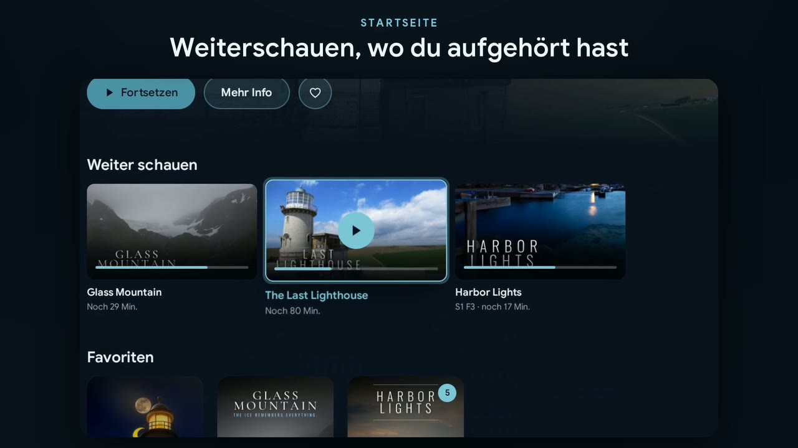
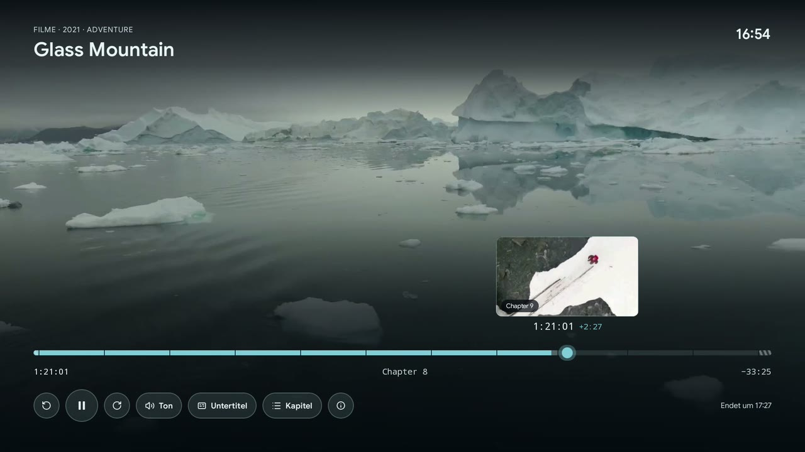
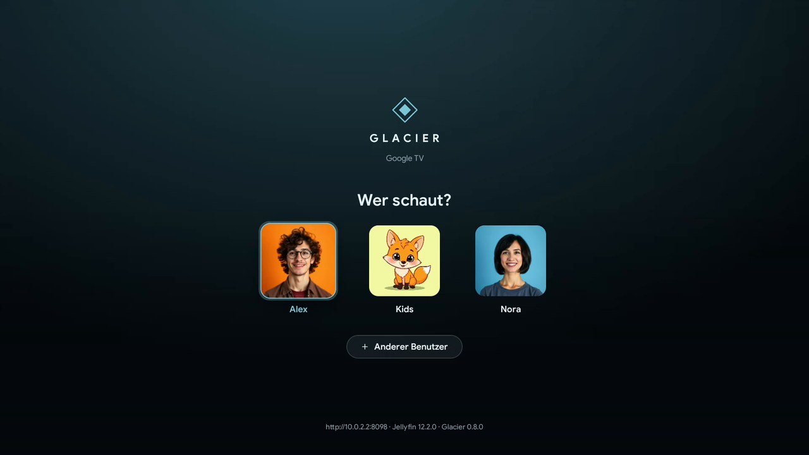
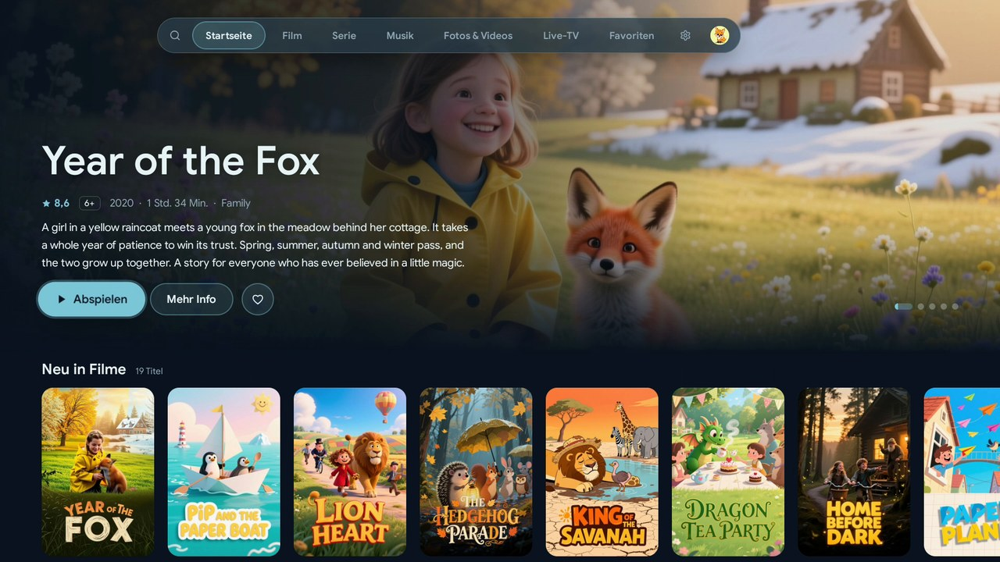
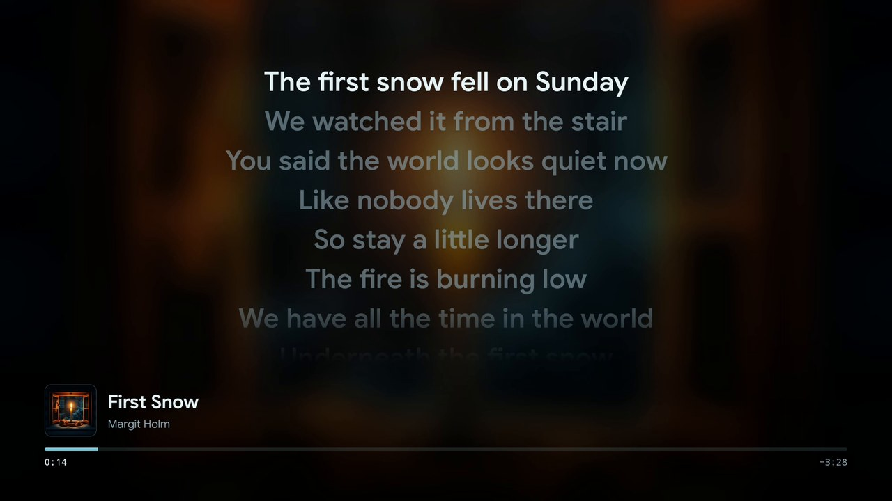
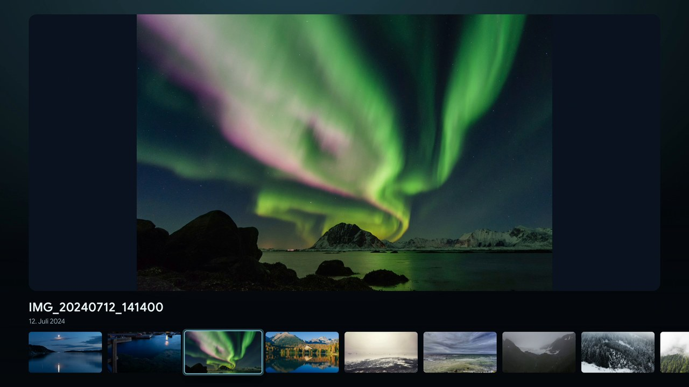
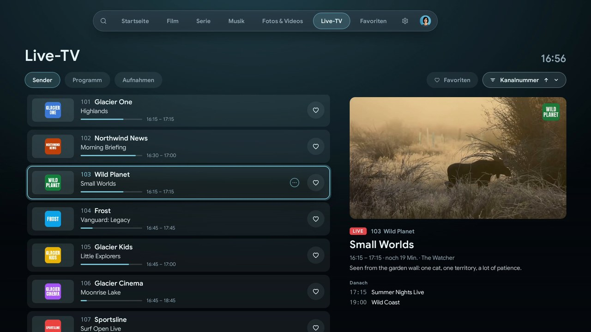
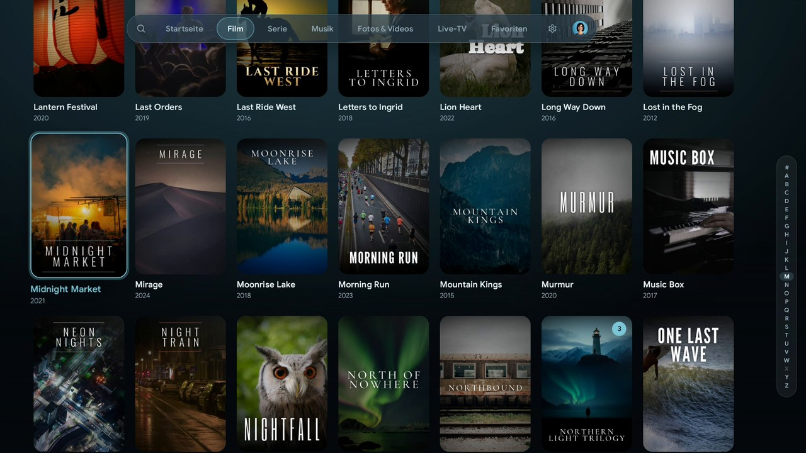
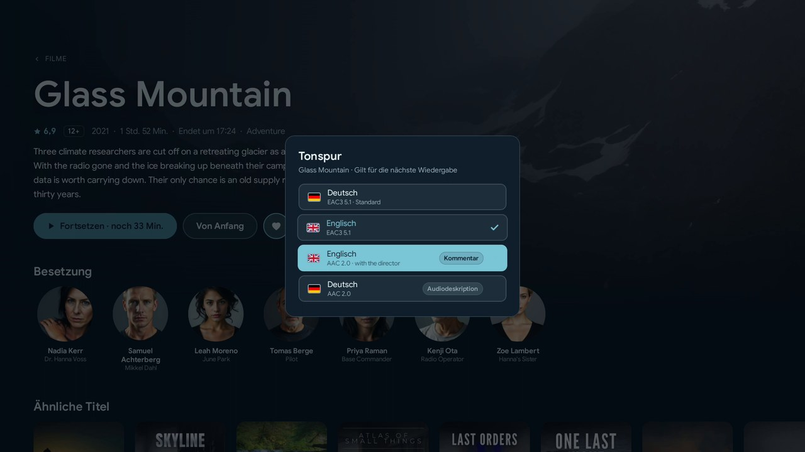

Der Fernseher gehört wieder dir.
Glacier holt deinen Jellyfin-Server ins Wohnzimmer. Nimm die Fernbedienung und drück ein paar Tasten.
Kostenlos für Android TV, Google TV und Fire TVProbier es aus
Nimm die Fernbedienung und drück eine Taste. Der Fernseher macht mit.

Drück die Tasten.
Die Pfeiltasten gehen auch.
Was Glacier anders macht
Drei Dinge im Wohnzimmer, um die sich Glacier besonders kümmert.
Für die Anlage unter dem Fernseher
TrueHD und DTS-HD kommen am Receiver so an, wie sie auf der Platte liegen, auch dort, wo Android sonst nur den DTS-Kern durchlässt oder an TrueHD scheitert.
Und wenn gar nichts durchgeht: E-AC-3, damit Surround bleibt.

Für den Fernseher selbst
Dolby Vision auch von UHD-Blu-rays mit Profil 7, direkt auf dem Gerät umgerechnet. Der Fernseher wechselt auf die Bildrate des Films, und vorher prüft Glacier mit echten Testdateien, was er abspielen kann.
Einstellungen › System › Wiedergabe prüfen
Für alle auf dem Sofa
Jeder hat sein Profil mit Bild, Farbe und eigenem Fortschritt. Das Kinderprofil zeigt nur, was zum Alter passt, die PIN geht per Steuerkreuz. Neuer Fernseher? Die Einstellungen ziehen mit.
Ein Kissen pro Profil.


20 Uhr, alle aufs Sofa.
Wer schaut? Die Kleine nimmt den Fuchs und sieht nur, was für sie passt. Du bekommst nachher deine Serie genau da zurück, wo du gestern eingeschlafen bist.
Das Regal daneben
Musik, Fotos und Fernsehen in derselben App, mit derselben Fernbedienung.

Musik
Songtexte groß im Takt, Musikvideos mitten in der Warteschlange. Beim Stöbern bleibt der Mini-Player.

Fotos & Heimvideos
Nach Ordnern, als Galerie oder im Vollbild. Auf OK startet die Diashow vom letzten Sommer.

Live-TV
Sender wählen, die Vorschau läuft schon. Mit Programmführer, Aufnahmen, Pause und Zurückspulen.
Das Kleingedruckte an der Pinnwand
Die Details, mit denen sich eine App für den ganzen Haushalt gut lebt.

Große Bibliotheken öffnen schnell
Finden & anfragen
Die Suche findet auch Filme und Serien, die noch nicht auf deinem Server sind. Anfragen gehen über Seerr direkt vom Fernseher, mit dem Plugin Jellyfin Enhanced.
Fassungen eines Titels
2160p und 1080p oder der Director's Cut: Glacier wählt die passende für deinen Fernseher.
Auf dem Startbildschirm
Weiterschauen und drei optionale Kanäle auf dem Startbildschirm von Android TV. Nicht auf Fire TV.

Jede Tonspur klar beschriftet
Bleibt aktuell
Aus dem Store aktualisiert sich Glacier wie jede App. Von GitHub holt der eingebaute Updater Stable- oder Beta-Versionen.
Zwei Minuten im Wohnzimmer
Vom Startbildschirm bis Live-TV. Mach den Ton an.
Musik: „Inspired“ von Kevin MacLeod (incompetech.com), lizenziert unter CC BY 4.0.
Downloader code
2423112
nicht wegwerfen!
Gefällt dir Glacier?
Ein Stern auf GitHub kostet dich einen Klick. Er hilft anderen Jellyfin-Fans, Glacier zu finden.
Stern auf GitHub gebenIn zwei Minuten auf dem Fernseher
- Die kostenlose App Downloader aus dem App-Store des Fernsehers installieren.
- Öffnen, den Code eintippen und die Installation erlauben.
- Fertig. Ab jetzt hält sich Glacier selbst aktuell.
Kostenlos, ohne Konto und ohne Werbung, ab Android 9. Lieber aus dem Store?
Hilf mit, Glacier zu Google Play zu bringen
Google veröffentlicht Apps von neuen privaten Entwicklerkonten erst nach einem geschlossenen Test mit mindestens 12 Testern über 14 Tage. Wenn du ein Android TV oder Google TV hast, kannst du einer davon sein.
- Mit dem Google-Konto deines Fernsehers der Testergruppe beitreten.
- Mit demselben Konto am Test teilnehmen.
- Auf dem Fernseher den Play Store öffnen und Glacier installieren. Es kann ein paar Minuten dauern, bis die App dort erscheint.